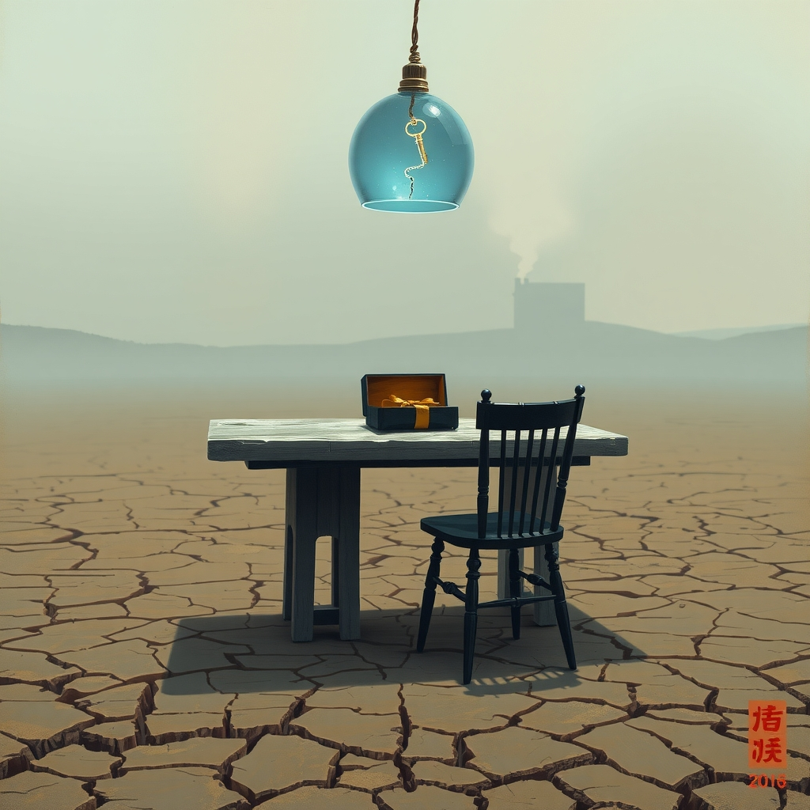
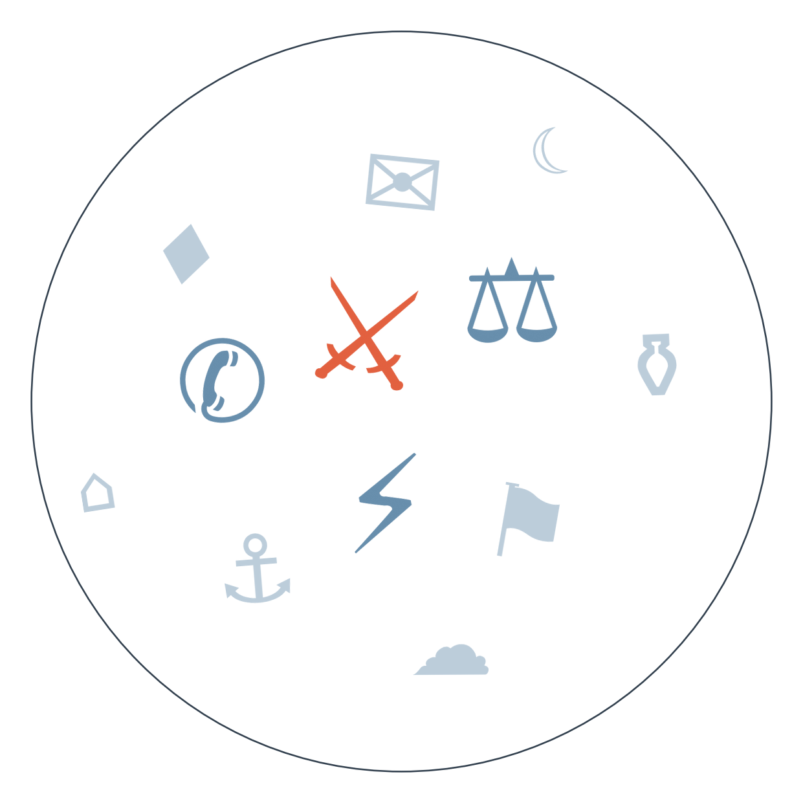

Ранковий бріф · огляд світової преси

Отже, найгарячіша новина ночі — не удар, а розмова. Американські й іранські дипломати провели три години перемовин на полях Генасамблеї ООН, і глава МЗС Ірану Аракчі передав спецпосланнику США умови відкриття Ормузької протоки: негайне зняття морської блокади, розблокування активів, і ще низку вимог. Трамп годиною раніше погрожував "знищити" Іран з трибуни ООН, а потім сам назвав переговори "дуже продуктивними" — розбіжність між публічною погрозою і кулуарним тоном і є головним сигналом дня (гонка озброєнь у Затоці, ~4 тижні).
Зеленський зустрівся з Трампом у Нью-Йорку й попросив зимовий пакет ракет Patriot — відмови не було, але й конкретної відповіді теж, каже сам президент. Водночас Зеленський заявив про готовність зупинити удари по нафтопереробці РФ, якщо Москва зупинить удари по українській енергетиці — пропозиція звучить на тлі найбільшого за війну удару по московському НПЗ (дипломатія завершення війни, ~5 тижнів).
Голова Міжнародного енергетичного агентства попередив, що Європу цієї зими може чекати одна з найважчих криз з постачанням газу — попередження звучить на тлі паралельних розглядів у Вашингтоні можливої заборони на експорт дизелю, що здатна ще сильніше вдарити по європейських цінах на паливо (див. ГРОШІ).
ЄС продовжив персональні санкції проти Росії ще на три роки — але виключив зі списку олігархів Алішера Усманова і Михайла Фрідмана під тиском Франції та Люксембургу. Київ назвав це "ганебним і невиправданим", Латвія окремо пообіцяла національні обмеження проти обох (розкол темпів санкційної підтримки, ~3 тижні).
І нарешті — обмін ударами по енергетиці не припиняється: Україна атакувала Куйбишевський НПЗ у Росії, спричинивши дефіцит бензину у понад десяти містах, Росія тієї ж ночі вдарила по Києву та кільком регіонам ракетами й дронами. Зеленський попереджає: розвідка фіксує підготовку Росії до нового масованого удару.

Сюжет перший: переговори США-Ірану на полях ООН (див. ГОЛОВНЕ).
Замовчують: жодне джерело не публікує зміст американської відповіді на іранські умови — невідомо, чи Вашингтон взагалі розглядає зняття блокади.
Чому розходяться: іранське державне медіа працює на внутрішню аудиторію, якій треба показати силу переговорної позиції; саудівське видання зацікавлене подати Іран як непередбачуваного гравця — від стабільності Ормузу залежить безпека самої Саудівської Аравії; канадське видання дивиться на сюжет через призму внутрішньоамериканської критики Трампа, а не близькосхідної політики; хорватське — просто транслює агентські повідомлення без власної рамки.
Сюжет другий: запуск президентського "Trump TV" і позов CNN/MSNBC/Politico проти Білого дому.
Профільні видання: фокусуються не на рейтингах, а на юридичному аспекті — позові CNN, MSNBC і Politico проти Білого дому за Першою поправкою.
Замовчують: жодне джерело не поєднує обидва сюжети — рейтинговий провал і судовий позов — в одну картину причин і наслідків.
Чому розходяться: Bild орієнтується на розважальний ефект і зовнішню іронію щодо медійного суперника Трампа; серйозна преса зосереджена на конституційному прецеденті, а не на видовищності шоу.
Санкційний розкол ЄС. Словаччина й Франція заблокували продовження санкцій на початку вересня → голосування зривалось двічі, до блокади Франції приєдналась Латвія (19-22.09) → сьогодні ЄС таки продовжив список на три роки, але ціною виключення Усманова і Фрідмана → веде до нового прецеденту: якщо олігархів можна виключати поодинці під тиском однієї-двох країн, тиск на решту списку слабшатиме й надалі.
Дипломатія завершення війни. Обговорення можливого енергоперемир'я тривало з середини вересня → 22.09 Україна завдала найбільшого за війну удару по московському НПЗ → того ж дня Зеленський у Нью-Йорку запропонував Трампу формулу "зупинимо удари по нафтопереробці РФ, якщо Росія зупинить удари по нашій енергетиці" → веде до вирішального тижня: чи ухвалить Трамп пакет Patriot і чи витримає крихка пропозиція перемир'я найближчий обмін ударами.
Гонка озброєнь у Затоці (див. ГОЛОВНЕ). Обмін ударами США-Іран стався 9-16.09; окремо, ймовірно внаслідок атак хуситів, саудівський трубопровід Схід-Захід був пошкоджений і частково відновлений до 18.09 → 22-23.09 США й Іран провели тригодинні переговори на полях ГА ООН, Іран уперше публічно озвучив умови відкриття Ормузу → веде до розвилки на найближчий тиждень: або це перший крок до угоди про судноплавство, або жорсткість IRGC, про яку пише Al Arabiya, зірве й цей раунд.
Міністр фінансів США Бессент розглядає заборону експорту дизелю (за одним джерелом — Axios, див. РАДАР) на тлі рекордного зростання внутрішніх цін на паливо — рішення вдарить і по Європі, де дизель уже дорожчає (скарги водіїв у Бельгії, Австрії). Nasdaq оновив історичний максимум на хвилі ажіотажу довкола ШІ, тоді як Financial Times повідомляє про вигорання й тривогу серед топдослідників OpenAI, Anthropic і Google DeepMind — розрив між ринковим ентузіазмом і внутрішнім станом галузі. Біткоїн наближається до позначки 90 000 доларів після року падінь, стійкість тренду під сумнівом. Попередження МЕА про важку зиму для Європи — див. ГОЛОВНЕ.
Запуск президентського "Trump TV" і позов CNN, MSNBC і Politico проти Білого дому за Першою поправкою розійшлися по оптиці (див. РОЗКОЛ ОПТИКИ). Індійський Times Now подає розгромну заяву іранських військових на адресу промови Трампа в ООН впритул до гороскопів і новин про розлучення учасника реаліті-шоу — характерний для масової оптики розрив масштабів.
Литва починає будувати захищену від дронів електропідстанцію біля кордону з Росією — прямий сигнал того, що загроза енергетичній інфраструктурі більше не обмежується територією України, а вимагає підготовки і в сусідніх країнах ЄС.
Червоний Хрест повідомив, що за час війни зникли безвісти близько 275 тисяч осіб — цифру опублікувало лише одне видання (Verstka), решта преси, включно з українською, її не підхопила: ймовірно тема вимагає окремого пояснення методології підрахунку й незручна для обох сторін конфлікту. Хакерська група ShinyHunters заявила про крадіжку даних співробітників ФБР — новина є лише в боснійському Klix і Axios, великі американські медіа мовчать, найімовірніше через відсутність офіційного підтвердження бюро. Матеріал Financial Times про вигорання дослідників штучного інтелекту в топлабораторіях не підхопило жодне галузеве видання інших країн — тема незручна для індустрії, яка будує публічний наратив про контрольований і безпечний прогрес.
Середня впевненість. Латвія блокує зняття санкцій з Усманова й Фрідмана (див. ГОЛОВНЕ) окремо від загального голосування ЄС і готує національні обмеження — можливий сигнал розколу всередині самого Союзу навіть після формально ухваленого рішення. На основі трьох балтійських джерел: Delfi Latvia, LRT, 15min.
Низька впевненість. Заборона експорту дизелю з США може посилити дефіцит палива в Європі й додати інфляційного тиску цієї зими. На основі одного джерела (Axios).
Низька впевненість. Одночасна поява аварії F-16 біля американської бази в Німеччині й отруєних ртуттю посилок у німецькому логістичному центрі може вказувати на посилення прихованої диверсійної активності проти інфраструктури НАТО цієї осені. На основі одного джерела (данське DR), потребує підтвердження.
Наші:
Рахунок: 8 з 21 (базово 7 з 21).
Енергоперемир'я Росія-Україна буде порушене принаймні однією стороною до 29.09
США оголосять санкції проти постачальників зброї хуситам до 29.09
Перенесена зустріч Ірану з країнами Затоки не відбудеться до 29.09
Трубопровід Схід-Захід повністю відновить роботу до 30.09
Кажуть інші:
Energy Aspects (за Caixin): збої в танкерних перевезеннях через ірансько-американську війну можуть тривати до кінця 2026 року.
Кремль (за Kommersant, переказ заяв Трампа): очікує підписання кількох угод між Трампом і Сі 24 вересня у Вашингтоні.
Держдепартамент США (за National Post): конфлікт довкола атак хуситів на Саудівську Аравію "має потенціал швидко ескалувати".
Базова лінія у прогнозах. Відсоток «базово» — це ймовірність події за інерцією, якщо ніхто нічого не робитиме й нічого не зміниться. Друге число — наша впевненість. Прогноз має сенс лише тоді, коли ці числа розходяться: збіг означає, що ми просто описали поточний стан.
Відсотки в карті уваги. Частка країни в денному обсязі зібраних матеріалів. Не показник важливості події, а показник того, скільки місця країна зайняла в новинному потоці за добу. Різкий стрибок частки зазвичай означає, що в країні щось відбувається.